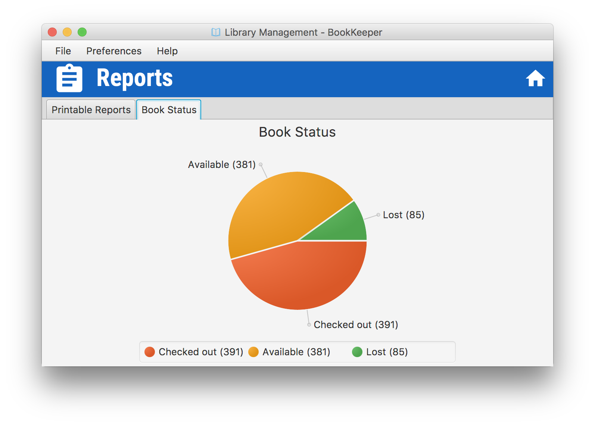

Generating Reports
-
Setting Fine Rates
- Select the Printable Reports tab
- Set the View to Fines
- Select a Fine Rate
- Select a Fine Limit
- If the view does not automatically update, select Refresh
- Select the Printable Reports tab
- Select the View
- Select the Sort (If the view isn't fines)
- Press "Print" to print using the system Print dialogue
- Select the Book Status tab
- The book status report can be seen in the pane

